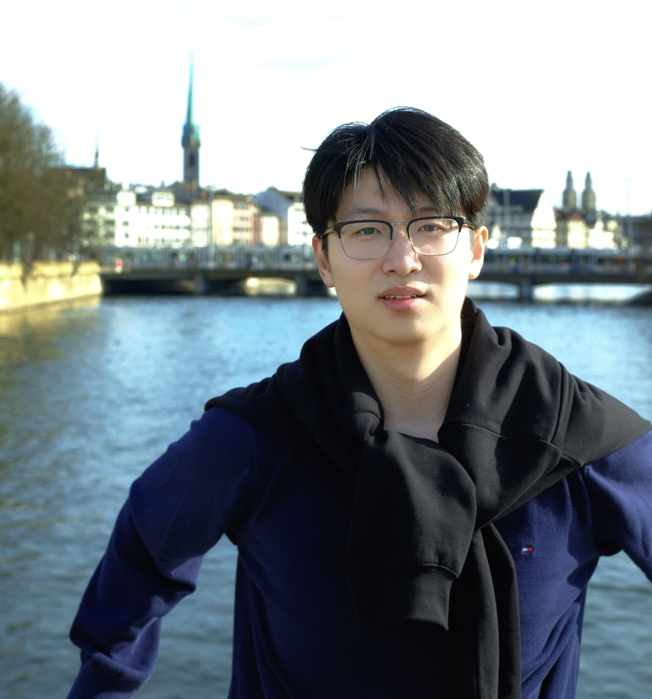

Xiaohao Sun | 孙小皓
Stay humble, trust your instincts. Most importantly, act. When you come to a fork in the road, take it.
I'm a second year Ph.D. student of computer science at Simon Fraser University, advised by professor Angel Xuan Chang. Prior to this, I got my Master of Applied Science degree from the Electrical Engineering Department University of Windsor. And I received my Bachelor of Science degree in the area of Mathematical and Physics Basic Science at School of Mathematical from University of Electronic Science and Technology of China. Currently I am also a research assistant in SFU GrUVi Lab working with professor Angel Xuan Chang at Simon Fraser University. My research interests are in 3D vision and language, generative models, and artificial intelligence.
News
- Aug, 2022 - One paper got accpeted at 3DV 2022
- Jan, 2022 - I joined GrUVi Lab, and start to work with Prof Angel Xuan Chang
- Sep, 2021 - Start my CS PHD at SFU

PhD Student
Sep 2021 - Present
Simon Fraser University
Research Assistant (Gruiv & 3dlg)
Google Scholar
Twitter
xiaohao_sun-{at}-sfu-"dot"-ca
PhD Student
Sep 2021 - Present
Simon Fraser University
Research Assistant (Gruiv & 3dlg)
Google Scholar